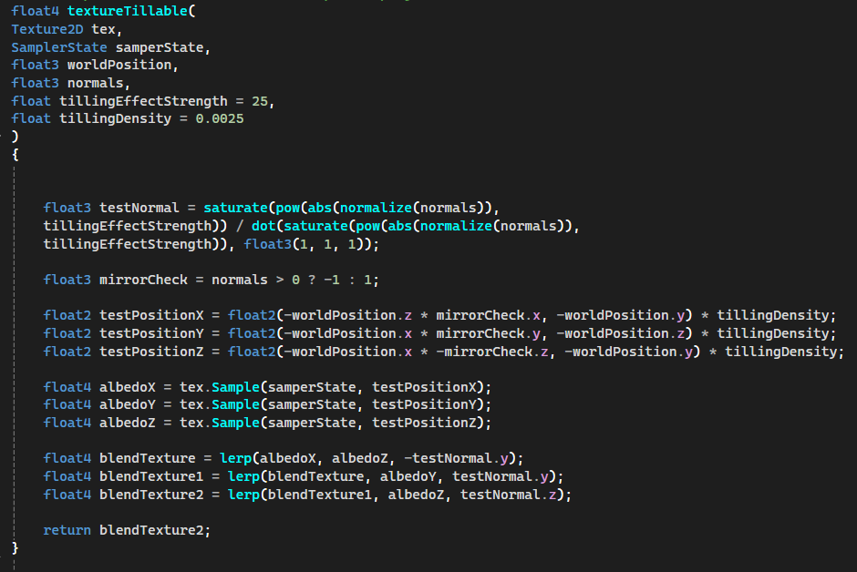

"As a Bunny separated from your herd, explore the environments around you for weapons and look for a way back to your friends. Beware… everything is not as it seems, and you may have to battle more just your sense of direction to make it back in one piece."


Specifications:
- Engine: TGE (Custom DX11)
- Platform: PC
- My Role: Technical Art, Animation
This was the second group project developed in TGE. Inspired by games such as Tunic, the project focuses on
exploration and combat. The game features four distinct levels, culminating in an arena-style encounter with
multiple enemy waves. It includes two weapons, three enemy types, checkpoint-based progression, and a strong
emphasis on stylized gore.
My role involved creating shaders, VFX, rigs, and animations. I was specifically responsible for rigging enemy
characters and developing environmental shaders such as fog, water, clouds, fire, and a triplanar shader for
tileable textures.
My primary contribution to this project was a triplanar shader designed for tileable textures. The shader uses vertex normal data to determine blending weights for projections along the three world axes. The texture is sampled three times—once per axis—and the results are blended using the normal components as interpolation weights. The function exposes controls for blending sharpness and tiling density, allowing for flexible adjustment depending on the surface. It works reliably on a wide variety of meshes, including non-uniformly scaled and rotated objects, making it particularly useful for environment assets.

Creating rigs for both melee and ranged enemy characters was one of my main responsibilities. These rigs were
then used by graphic artists to produce animations.
Destructible objects were implemented using Houdini. Assets were fractured using procedural tools
and simulated with an RBD Bullet solver. Each fragment was assigned a bone at its pivot point, allowing the
simulation to be exported as a rigged asset.
The resulting assets were then imported into Blender for cleanup, bone assignment refinement, and animation
adjustments before being integrated into the engine.
Health-Based Damage Visualization was implemented by using multiple noise functions with a health
parameter. As health decreases, characters appear progressively more damaged and blood-covered.
Substance Designer was used to simulate wave motion. Additionally, shadow map distortion
was applied to enhance the illusion of moving water.